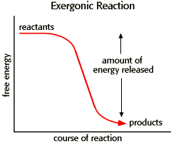
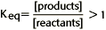

Energy, Enzymes, and Catalysis Problem Set
Problem 8 Tutorial: Features of an exergonic reaction.
Exergonic reactions:
A. release energyB. are spontaneous reactions
C. have an equilibrium constant greater than 1
D. can be coupled to energonic reactions
E. All statements are true
Exergonic reactions release energy
An energy diagram for an exergonic or spontaneous reaction is shown to the right. The energy level of the products is lower than the energy level of the reactants. Energy is released in this reaction. The amount of energy released during the reaction is termed ΔG, which is less than zero. 
Exergonic reactions are also termed "spontaneous" reactions
The equilibrium constant for an exergonic reaction is greater than 1, meaning that the concentration of products is greater than the concentration of reactants at equilibrium.

Exergonic reactions can be coupled to endergonic reactions. Oxidation-reduction (redox) reactions are examples of the coupling of exergonic and endergonic reactions. Enzymes often act by coupling an endergonic reaction to the exergonic hydrolysis of ATP.


Department of Biochemistry and Molecular Biophysics
University of Arizona
Revised: October 2004
Contact the Development Team
http://www.biology.arizona.edu
All contents copyright © 1996. All rights reserved.